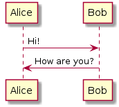
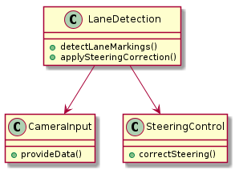

Architecture
This is an overview of the architecture.

Below is code to add a table
Heading row 1, column 1 |
Heading row 1, column 2 |
Heading row 1, column 3 |
|---|---|---|
Row 1, column 1 |
Row 1, column 3 |
|
Row 2, column 1 |
Row 2, column 2 |
Row 2, column 3 |
Below is an example showing some python code
pygments_style = 'sphinx'
Showing some Sphinx Needs items
Design the software architecture for the Lane Detection Subsystem, including data acquisition, processing, and corrective action modules.  |
![@startuml
' Nodes definition
node "<size:12>Implementation</size>\n**The second**\n**component**\n<size:10>I_002</size>" as I_002 [[../architecture/component2.html#I_002]] #DF744A
node "<size:12>Architecture</size>\n**Lane Detection**\n**Subsystem**\n<size:10>A_001</size>" as A_001 [[../architecture/index.html#A_001]] #D2244A
node "<size:12>Implementation</size>\n**Something**\n<size:10>I_001</size>" as I_001 [[../python-doc/module_1.html#I_001]] #DF744A
node "<size:12>Requirement</size>\n**Lane Marking**\n**Detection**\n**Algorithm**\n<size:10>R_001</size>" as R_001 [[../usage/index.html#R_001]] #BFD8D2
node "<size:12>Requirement</size>\n**Lane Deviation**\n**Warning**\n<size:10>R_002</size>" as R_002 [[../usage/index.html#R_002]] #BFD8D2
' Connection definition
I_002 --> A_001: implements\n
I_002 --> R_001: fulfils\n
A_001 --> R_001: fulfils\n
A_001 --> R_002: fulfils\n
I_001 --> A_001: implements\n
I_001 --> R_001: fulfils\n
@enduml](../_images/plantuml-3fd52ccf701893110eb5f1ba9c39f1be45d0ede9.png)
End of document